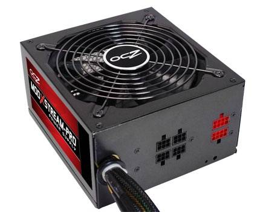

A fonte de alimentação é o dispositivo responsável por fornecer energia elétrica aos componentes de um computador. Portanto, é um tipo de equipamento que deve ser escolhido e manipulado com cuidado, afinal, qualquer equívoco pode resultar em provimento inadequado de eletricidade ou em danos à máquina. É por esse motivo que o InfoWester apresenta este artigo. Nele, você conhecerá as principais características das fontes, como tensão, potência, PFC, eficiência, tipos de conectores, entre outros.
fontes de alimentação são equipamentos responsáveis pelo fornecimento de energia elétrica aos dispositivos dos computadores. Para isso, convertem corrente alternada (AC - Alternating Current) - grossamente falando, a energia recebida por meio de geradores, como uma hidroelétrica - em corrente contínua (DC - Direct Current), uma tensão apropriada para uso em aparelhos eletrônicos. Assim, a energia que chega nas tomadas da sua casa em 110 V (Volts) ou 220 V é transformada em tensões como 5 V e 12 V. Os computadores usam fontes de alimentação do tipo chaveada. Trata-se de um padrão que faz uso de capacitores e indutores no processo de conversão de energia e recebe esse nome por possuir, grossamente falando, um controle de chaveamento que "liga e desliga" a passagem de energia de forma a gerar e fixar uma tensão de saída. Há também uma categoria chamada fonte linear, mas esse tipo não se mostra adequado aos computadores por vários motivos, entre eles, tamanho físico e peso elevado, além de menor eficiência (conceito que será explicado neste texto), uma vez que fontes lineares utilizam um "excesso" de energia para manter sua tensão de saída, gerando também mais calor. Nas fontes chaveadas isso não ocorre porque esse tipo simplesmente desativa o fluxo de energia em vez de dissipar a "sobra". Além disso, fontes chaveadas também exigem menor consumo, pois utilizam praticamente toda a energia que "entra" no dispositivo.
Por se tratar de um equipamento que gera campo eletromagnético (já que é capaz de trabalhar com frequências altas), as fontes devem ser blindadas para evitar interferência em outros aparelhos e no próprio computador. Antes de ligar seu computador na rede elétrica, é de extrema importância verificar se o seletor de voltagem da fonte de alimentação corresponde à tensão da tomada (no Brasil, 110 V ou 220 V). Se o seletor estiver na posição errada, a fonte poderá ser danificada, assim como outros componentes da máquina. Menos comuns, há modelos de fontes que são capazes de fazer a seleção automaticamente.
